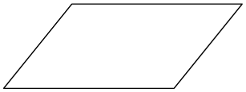
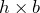
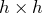
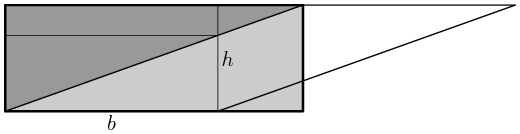
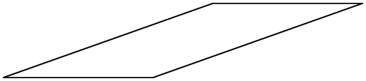
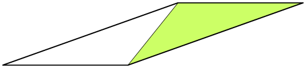
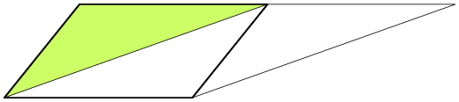
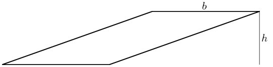
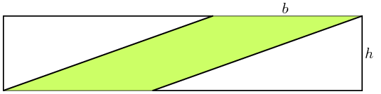

Suscríbete
Suscríbete
¿Cuál es el tamaño de un paralelogramo?
No todas las soluciones de un problema son iguales. Hay muchas formas de mostrar cómo se puede encontrar el tamaño de un paralelogramo: una solución es muy simple, pero poco general; otras son generales pero complejas, y al menos una es general, simple y bonita.
El caso simple
Cuando buscaba una forma clara y geométrica de calcular el área de un paralelogramo primero pensé en el caso más simple:

La solución es muy sencilla en cuanto se te ocurre que tienes
que compararlo con el rectángulo de base  y altura
y altura  :
:

Puedes quitar el triángulo verde de la derecha y ponerlo a la
izquierda: cabe justo en el trozo verde dentro del rectángulo
de altura y ancho . El rectángulo tiene por lo tanto
exactamente el mismo tamaño que el paralelogramo original. Y
ya sabemos cómo calcular el área de un rectángulo,  , por lo que el problema parece solucionado.
, por lo que el problema parece solucionado.

Es un resultado muy interesante, porque te dice que puedes desplazar horizontalmente del lado superior de tu paralelogramo tanto como quieras sin modificar su tamaño.
¿Tanto como quieras? Bueno, realmente no lo sabemos. Porque a base de desplazar llegas a un punto en que el argumento que hemos usado ya no aplica. ¿Qué dirías de este paralelogramo?

Tiene las mismas y que el anterior. Tal vez su área
sea también la misma, pero todavía no lo sabemos: no podemos
aplicar el argumento de antes, porque no podemos cortar el
triángulo de la derecha y ponerlo a la izquierda para
construir el rectángulo. No encaja.

Podríamos rotarlo, hacer que la base sea uno de los lados largos, y estaríamos en el caso anterior, con lo que podríamos calcular el área. Pero a estas alturas el objetivo no era sólo calcular el área, sino que se trataba de ver si sigue siendo . Así que necesitaba otro argumento, y argumento encontré. Pero resulta que era largo, no muy bonito y, por lo tanto, poco satisfactorio.
El paralelogramo muy inclinado
Hablándolo a la hora de comer con varios amigos aparecieron un par de soluciones mejores que la mía. Jaime Fernández y Ján Morovič rápidamente vieron una forma muy inteligente de convertir el nuevo problema en el anterior, y Utpal Sarkar (Doetoe) pensó un una solución simple, general y muy elegante.
Te recomiendo que lo pienses antes de mirar las soluciones, y que después las leas en orden: primero la larga, después la inteligente, y finalmente la elegante (y mejor).
El camino tortuoso
La hipótesis es que debería ser posible encajar el
paralelogramo en el rectángulo de por , de forma que
el área del paralelogramo sea  . Una posibilidad
es estirar el rectángulo para que llene el agujero:
. Una posibilidad
es estirar el rectángulo para que llene el agujero:

Está claro que el triángulo azul de la derecha es exactamente del mismo tamaño que el triángulo verde oscuro, por lo que lo podemos mover hasta que formen un rectángulo pequeño:

Todavía tenemos el rectángulo verde clarito por cubrir, y el área azul para encajar. Si la hipótesis era correcta, y el área del paralelogramo original era la misma que la del rectángulo , el área azul debería ser idéntica que la del rectángulo verde claro. Una forma de ver si es cierto es dividir la figura en estos triángulos:

Son idénticos. Cada uno contiene una de las áreas que queremos ver si son iguales, y además idénticos triángulos medianos (verde oscuro) e idénticos triángulos pequeños (grises):

Por lo que el rectángulo verde claro y el área azul tienen que ser iguales.
La solución de Jaime y Ján
Es más inteligente y mucho más sencilla. Empezamos de nuevo con el paralelogramo original:

y lo cortamos así

Podemos mover el triángulo verde a la izquierda, así: 
Hemos construido un paralelogramo que tiene exactamente la misma área que el original, pero que está menos inclinado. De hecho, es un paralelogramo sencillo del que sabemos calcular el área.
Si la inclinación original hubiera sido mayor hubiéramos
tenido que hacer más de una transformación como ésta para
alcanzar el caso sencillo, pero siempre llegaremos. Por lo
tanto, siempre podremos convertir el paralelogramo en otro
del que sabemos que el área es .
La solución de Doetoe
Doetoe vio una solución aún más simple y más elegante. Partimos del paralelogramo inclinado original: 
y dibujamos un rectángulo alrededor: 
Ahora simplemente deslizamos el triángulo inferior derecho
hacia la izquierda hasta que encaje con el otro:

Y eso es todo, está claro que tiene que ser
igual al área del paralelogramo original. General, bonito
y sencillo.
blog comments powered by Disqus